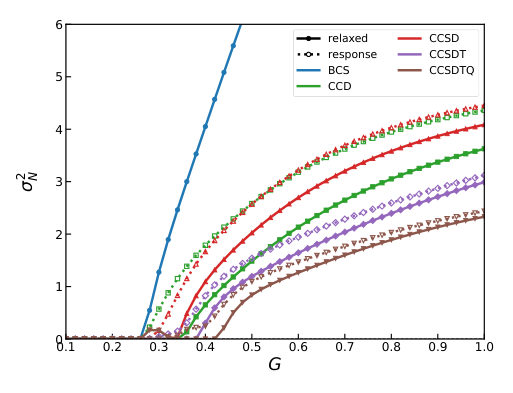
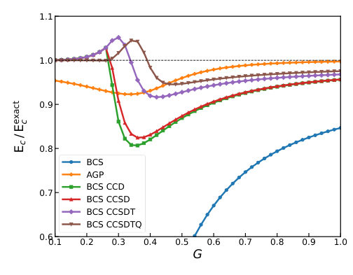
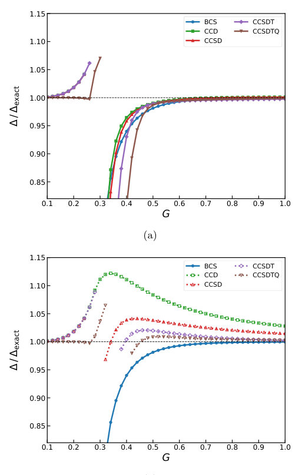
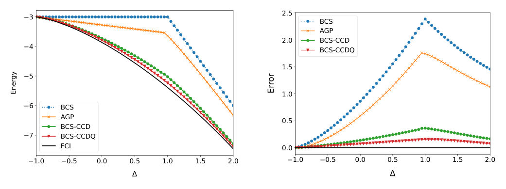
← Index · ← Previous · Next →
Authors: Antoine Gallo Frantz, Aleksander Sinchenko, Luc Ortega, Abdellali Hadj Azzem, Jose Emilio Lorenzo, Pierre Monceau, David Le Bolloch, Vincent Jacques
Type: experiment · Category: strongly correlated electrons · PDF: https://arxiv.org/pdf/2609.34569v1
Analysis basis: full PDF text, analyzed in chunks
Topic relevance: Frenkel-Kontorova 3/5 · driven-dissipative phase transition 1/5 · non-equilibrium universality 1/5
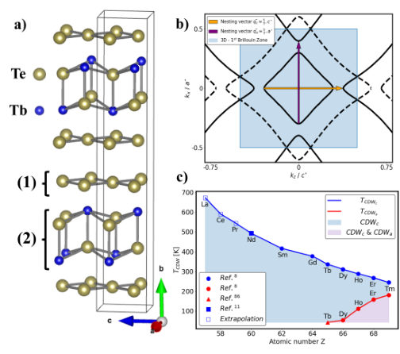
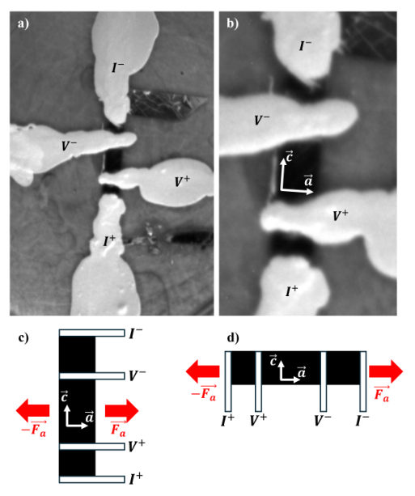
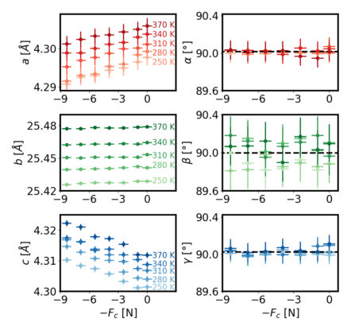
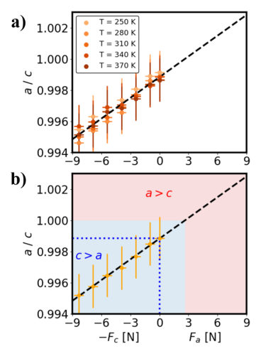
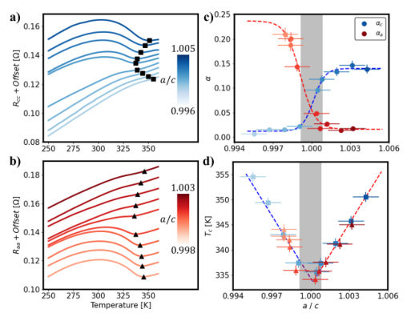
Summary. This work investigates how mechanical tensile strain affects the sliding dynamics of Charge Density Waves (CDWs) in $ ext{TbTe}_3$. By measuring electrical transport properties across different CDW phases—pristine, strain-induced, and coexisting—the authors confirm that the strain-induced phase also exhibits incommensurate sliding behavior. This research opens new avenues for understanding CDW physics in quasi-2D materials under external mechanical tuning.
Why it may be interesting. The study provides experimental evidence of how mechanical strain can tune and reveal the fundamental dynamics of CDW order in quasi-2D systems, which is a key area of research in correlated electron physics.
Main problem. The study investigates the sliding dynamics of Charge Density Wave (CDW) phases in strained $ ext{TbTe}_3$, comparing the pristine $c$-oriented $ ext{CDW}_c$ with the strain-induced $a$-oriented $ ext{CDW}_a$. It also examines the behavior in the coexistence phase.
Main result. The strain-induced $ ext{CDW}_a$ phase exhibits sliding characteristics similar to $ ext{CDW}_c$, confirming its incommensurate nature. Furthermore, sliding occurs in both CDW phases with reduced threshold currents in the coexistence phase.
Method. The research uses four-probe resistivity measurements to obtain current-voltage ($V(I)$) characteristics, which are analyzed to determine the threshold voltage ($V_{th}$) associated with CDW sliding, while simultaneously applying uniaxial tensile stresses.
Model / system. The physical system is $ ext{TbTe}_3$, a rare-earth tritelluride exhibiting CDW phases. The material is quasi-2D and its CDW order can be tuned by applying uniaxial tensile stress along the $a$ and $c$ axes, leading to distinct $ ext{CDW}_c$ and $ ext{CDW}_a$ phases.
Key observables. Current-voltage characteristics, differential resistances, threshold current/voltage ($V_{th}$), and lattice parameters ($a, c$) measured via XRD.
Important parameters / regimes. Applied uniaxial tensile stress (along $a$ and $c$ axes), temperature ($T$), and the $a/c$ lattice ratio.
Assumptions / limitations. The analysis assumes that the observed electrical non-linearities are due to the collective sliding motion of the incommensurate CDW order parameter.
Figures summary. Figures illustrate the crystal structure and phase diagram, sample geometry, the evolution of lattice parameters vs. applied force, and the temperature dependence of the threshold voltage for both CDW phases.
Paper structure. The paper systematically probes the sliding dynamics by measuring electrical transport properties across the pure $ ext{CDW}_c$, pure $ ext{CDW}_a$, and the coexisting phase, correlating these electrical measurements with structural changes induced by strain.
In the last years, the application of mechanical tensile stress has been shown to trigger unconventional phases in quantum materials. Recently, an orientational transition of the charge density wave (CDW) of TbTe3 was reported under the application of moderate uniaxial tensile stress, associated to the in-plane a/c lattice anisotropy. This leads to the disappearance of the pristine c-oriented CDW (CDWc) and to the appearance of the orthogonal a-oriented one (CDWa). A coexistence phase with a superposition of CDWa and CDWc appears when a=c. Here, we probe the sliding dynamics of both CDWc and CDWa as a function of applied tensile stress, i.e. in the pure CDWc, pure CDWa and coexistence phases, by measuring current-voltage characteristics and associated differential resistances. If the pristine CDWc has been known to display non-linear dynamics and thus sliding for several years, we show here that the strain-induced CDWa phase also displays the same characteristics, proving its incommensurate nature. Moreover, we show that sliding also takes place both for CDWc and CDWa, with reduced threshold currents, in the coexistence phase, which questions the microstructure of these coexisting orthogonal CDWs in real space. Finally, the linearity of the threshold fields is kept for all deformation states, with finite threshold fields at Tc, which is discussed in terms of commensurability and pinning potentials. This work opens new questions for the theoretical description of sliding CDWs in quasi-2D systems.
Authors: M. R. Tarbutt
Type: theory · Category: other · PDF: https://arxiv.org/pdf/2609.33475v1
Analysis basis: full PDF text, analyzed in chunks
Topic relevance: analog quantum simulation 3/5 · correlated / nonlocal dissipation 1/5 · quantum measurements 1/5
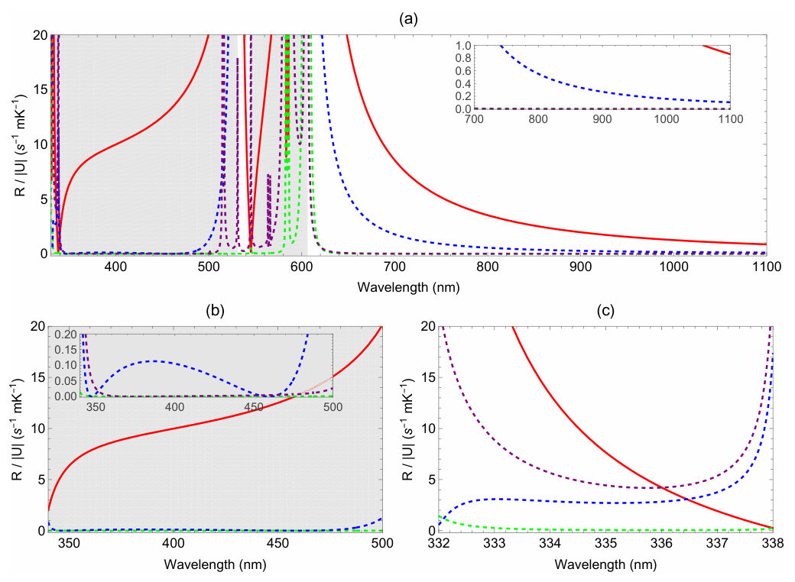
Summary. This theoretical paper calculates the decoherence rate for molecular qubits due to photon scattering from optical traps. It shows that while molecular decoherence is generally high, the rate can be significantly suppressed by choosing specific trapping laser wavelengths where the molecular polarizabilities are minimized. This guides the experimental search for robust quantum platforms.
Why it may be interesting. This work directly addresses a critical decoherence mechanism in molecular quantum simulation platforms, providing quantitative methods to engineer 'magic' trapping wavelengths that extend coherence times.
Main problem. The paper determines the decoherence rate of molecular qubits held in optical traps due to photon scattering from the trapping lasers.
Main result. Decoherence can be suppressed at specific 'magic wavelengths' where the molecular polarizabilities ($\alpha_1$ and $\alpha_2$) are simultaneously small, allowing for long coherence times.
Method. The decoherence rate is calculated by summing contributions from Raman and Rayleigh scattering, expressed in terms of the vector and tensor parts of the molecular polarizability.
Model / system. The system involves ultracold diatomic molecules (e.g., CaF) used as qubits, trapped in conservative optical traps. The analysis distinguishes between 1$\Sigma$ and 2$\Sigma$ molecular states.
Key observables. Decoherence rate ($\Gamma_{sc}$), coherence time, and the scattering rates ($R_{ ext{Raman}}$, $R_{ ext{Rayleigh}}$).
Important parameters / regimes. Molecular polarizabilities ($\alpha_1, \alpha_2$), trapping laser wavelength ($\lambda$), and the detuning from resonances.
Assumptions / limitations. The calculation often assumes the light frequency is far detuned from resonances, and approximations are made regarding the overlap integrals for vibrational transitions.
Figures summary. Figures illustrate the dependence of Rayleigh and Raman scattering rates on wavelength for CaF, highlighting specific wavelength regions where these rates are minimized.
Paper structure. The paper develops the formalism for calculating scattering rates using the Kramers-Heisenberg formula, derives the total decoherence rate ($\Gamma_{sc} = \Gamma_{ ext{Raman}} + \Gamma_{ ext{Rayleigh}}$), and then applies this to specific molecular species to identify optimal trapping wavelengths.
Molecular qubits held in conservative optical traps may lose coherence when they scatter photons from the trapping lasers. The rate for this process has two parts, one equal to the mean Raman scattering rate of the two qubit states, and the other proportional to the square of the difference in their Rayleigh scattering amplitudes. This paper calculates the decoherence rate, expressing results in terms of the vector and tensor parts of the molecular polarizability, $α_1$ and $α_2$. While the decoherence rate is generally much larger for molecules than for atoms, it is suppressed at wavelengths where $α_1$ and $α_2$ are both small. The wavelengths where this occurs are identified for CaF molecules.
Authors: Myeong-Hwan Mun, Jubin Park, Myung-Ki Cheoun, Eunja Ha
Type: both · Category: quantum information and computing · PDF: https://arxiv.org/pdf/2609.34298v1
Analysis basis: full PDF text, analyzed in chunks
Topic relevance: QC/QI experiment 3/5 · quantum measurements 2/5
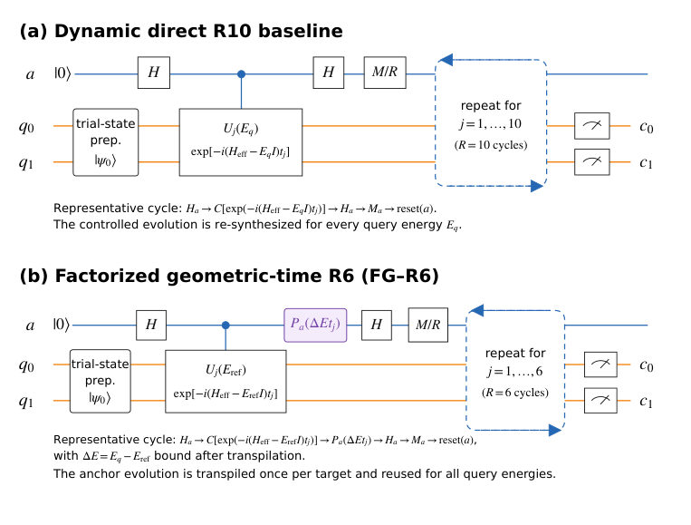
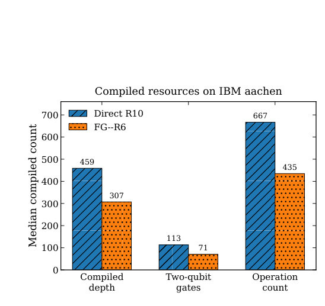
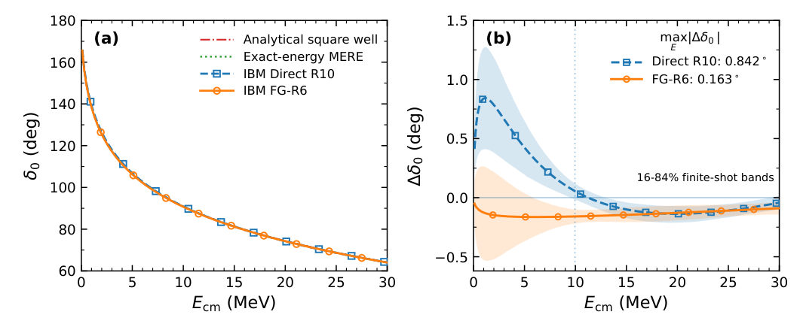
Summary. This research demonstrates a method to reconstruct neutron-proton scattering phase shifts by measuring trapped energy levels on a quantum processor. The authors introduce and validate a novel, resource-efficient quantum circuit implementation (FG-R6) that significantly reduces circuit depth and gate count compared to prior methods. This work establishes a rigorous benchmark showing that quantum algorithm performance must be evaluated based on the fidelity of the final physical observable, not just local energy measurements.
Why it may be interesting. This work directly connects the abstract performance metrics of quantum algorithms (circuit depth, gate count) to a concrete, physically measurable observable (nuclear scattering phase shifts), providing a crucial benchmark for quantum simulation in nuclear physics.
Main problem. The paper addresses the challenge of reconstructing fundamental nuclear scattering phase shifts from trapped spectra using quantum processors.
Main result. A factorized geometric-time RODEO circuit (FG-R6) significantly outperforms a standard ten-cycle direct RODEO circuit (direct R10) in terms of quantum circuit resources and accuracy for phase shift reconstruction.
Method. The authors compare two quantum circuit implementations (FG-R6 vs. direct R10) for the RODEO algorithm, utilizing circuit compression and geometric time evolution to measure energy levels and extrapolate scattering parameters.
Model / system. The physical system is the elastic s-wave neutron-proton (np) interaction, modeled using a schematic square-well potential. Measurements are performed on trapped spectra using a quantum processor (IBM Aachen).
Key observables. Elastic s-wave neutron-proton phase shifts ($\delta_0$), median compiled depth, two-qubit-gate count, and maximum central phase-shift deviation.
Important parameters / regimes. Energy grid ranging from 0.1 to 30.0 MeV; circuit cycle counts (6 vs. 10); and various spectral tolerances.
Assumptions / limitations. The analysis relies on extrapolating trap-dependent energy levels to free space using the classical Modified Effective Range Expansion (MERE).
Figures summary. Figures compare the cycle structure of the two quantum circuits and show the reduction in phase-shift deviation achieved by FG-R6 compared to direct R10 across the energy grid.
Paper structure. The paper introduces the problem of phase shift reconstruction, details the two competing quantum circuit methods (R10 vs. FG-R6), presents quantitative comparisons of circuit resources and achieved accuracy, and concludes by emphasizing the importance of assessing circuit performance via the full scattering reconstruction.
We reconstruct elastic $s$-wave neutron-proton ($np$) phase shifts from trapped spectra measured on IBM Aachen using a compressed RODEO circuit. For a schematic square-well interaction represented by classically constructed four-dimensional effective Hamiltonians, four positive-energy levels at five trap strengths supply twenty inputs to classical modified effective range expansion (MERE) extrapolation to free space. The six-cycle factorized geometric-time RODEO implementation (FG-R6) combines ancilla reuse, exact query-phase separation, post-compilation binding, and six numerically optimized geometric evolution times. Numerical cycle-count tests support this choice within the adopted local spectral tolerances. At the same three-qubit width and equal shot budgets, FG-R6 reduces median compiled depth and two-qubit-gate count by 33.1% and 37.2% relative to ten-cycle dynamic direct RODEO (direct R10), increases the median fitted amplitude, and lowers median finite-shot energy uncertainty from 0.610 to 0.534 keV. For this dataset's primary fit on the 0.1-30.0 MeV grid, the maximum central phase-shift deviation from exact-energy MERE decreases from $0.842^\circ$ to $0.163^\circ$, despite a larger root-mean-square (RMS) trapped-energy deviation. The full-grid gain arises mainly in the low-energy extrapolation region; direct R10 has slightly smaller residuals relative to the same reference on the 10.0-30.0 MeV common energy-interpolation subset. The FG-R6 central curve differs from the analytical square-well solution by at most $0.156^\circ$. Fit-form sensitivity remains appreciable and is assessed separately from finite-shot uncertainty. This reduced-space benchmark connects RODEO circuit compression to nuclear continuum observables and shows why circuit performance must be assessed through the scattering reconstruction and its energy range, not spectral RMS errors alone.
Authors: Zain H. Saleem, Da-Wei Luo, Anjala M. Babu, Ting Yu, Stephen K. Gray, Anil Shaji
Type: theory · Category: statistical mechanics · PDF: https://arxiv.org/pdf/2609.31853v1
Analysis basis: full PDF text, analyzed in chunks
Topic relevance: analog quantum simulation 3/5 · quantum measurements 2/5
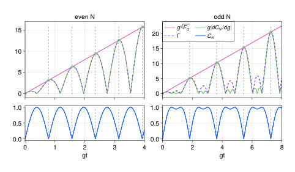
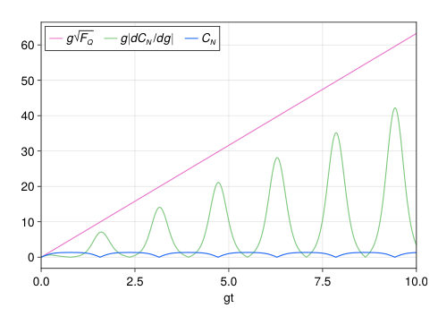
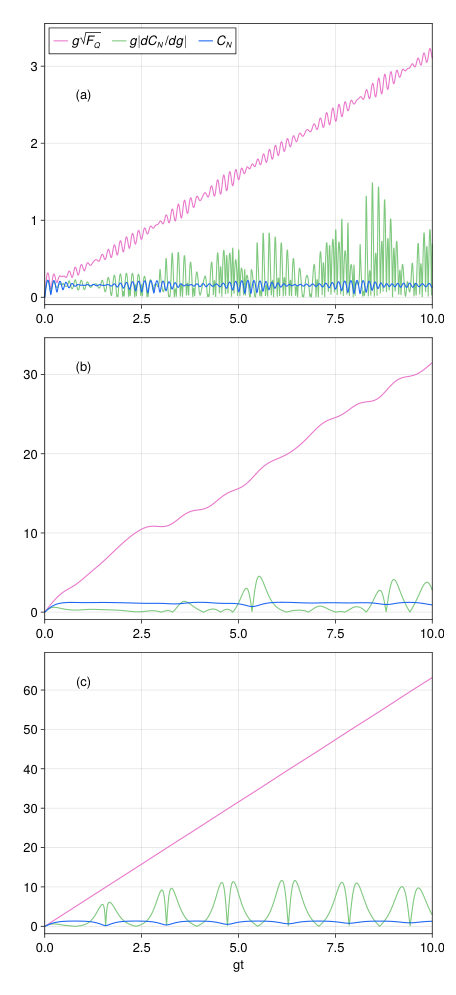
Summary. This work establishes that the Quantum Fisher Information (QFI) sets a universal upper bound on the speed of multipartite entanglement generation. By analyzing models like the TFIM, the authors show that while QFI can be strongly enhanced at quantum critical points, the rate of entanglement change may remain low. This reveals a decoupling between maximal parameter sensitivity and rapid entanglement growth.
Why it may be interesting. It connects fundamental concepts from quantum estimation theory (QFI) directly to the dynamics of multipartite entanglement in many-body systems, providing a quantitative measure of how fast quantum correlations can evolve.
Main problem. The paper derives a universal upper bound on the speed at which multipartite entanglement can be generated during parameter-dependent quantum evolution.
Main result. The rate of change of generalized concurrence is bounded by the square root of the Quantum Fisher Information ($\left| rac{dC_N}{dg} ight| \leq \sqrt{F_Q}$), demonstrating QFI as a fundamental speed limit for entanglement generation.
Method. The primary proof utilizes the Symmetric Logarithmic Derivative (SLD) formalism from quantum estimation theory, complemented by Schmidt-spectrum analysis for bipartite cases.
Model / system. The results are illustrated using interacting many-body spin models, specifically the Transverse-Field Ising Model (TFIM), and general pure multipartite states undergoing differentiable evolution.
Key observables. Generalized Concurrence ($C_N$), Quantum Fisher Information ($F_Q$), and the rate of change of concurrence ($ rac{dC_N}{dg}$).
Important parameters / regimes. The critical point of the TFIM ($g=h$) is investigated, where $F_Q$ is enhanced while entanglement change is suppressed.
Assumptions / limitations. The general bound is not saturated away from the product-state boundary, although a tighter bound exists for bipartitions with Schmidt rank exactly two.
Figures summary. Figures illustrate the dynamics of concurrence, its rate of change, and $\sqrt{F_Q}$ for the isotropic N-qubit Pauli interaction, showing $\sqrt{F_Q}$ acts as an envelope for the entanglement rate.
Paper structure. The paper first establishes the general bound using SLD theory, then analyzes saturation conditions using Schmidt decomposition, and finally applies these concepts to the TFIM to show that quantum criticality does not necessitate rapid entanglement changes.
We derive a universal upper bound on the speed of multipartite entanglement generation. For arbitrary differentiable pure multipartite states undergoing parameter-dependent evolution, we prove that the rate of change of generalized concurrence is bounded by the square root of the quantum Fisher information (QFI). The proof follows directly from the symmetric logarithmic derivative formalism, revealing the bound as a consequence of quantum estimation theory, while a complementary Schmidt-spectrum analysis identifies the conditions for saturation and yields a tighter bound for rank-two bipartitions. We illustrate these results in interacting many-body spin models and investigate their behavior across the quantum phase transition of the transverse-field Ising model. At the critical point, we find that the QFI can be strongly enhanced while the generalized concurrence is nearly stationary and its sensitivity to the coupling is suppressed. This demonstrates that the enhanced parameter sensitivity associated with quantum criticality need not arise from rapid changes in the magnitude of multipartite entanglement.
Authors: Alexander van Lomwel, Florian Mintert
Type: theory · Category: numerical methods · PDF: https://arxiv.org/pdf/2609.35114v1
Analysis basis: full PDF text, analyzed in chunks
Topic relevance: methods for driven-dissipative 3/5 · analog quantum simulation 1/5
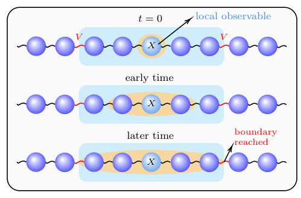
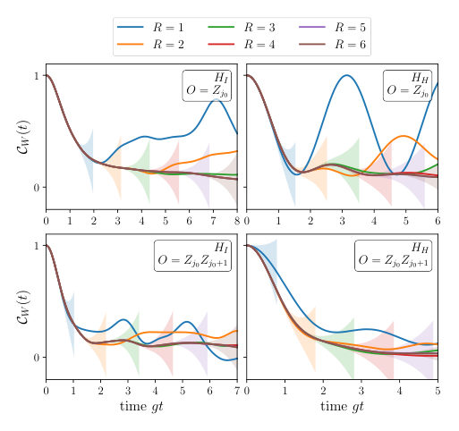
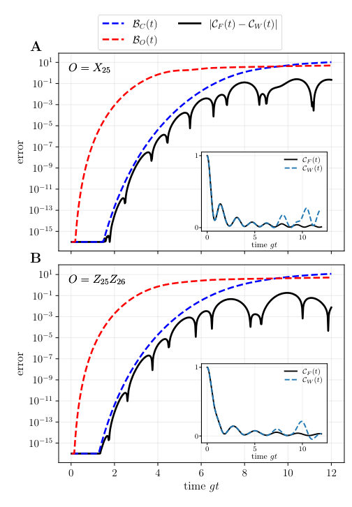
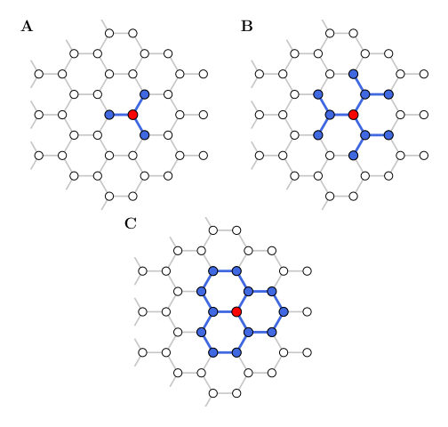
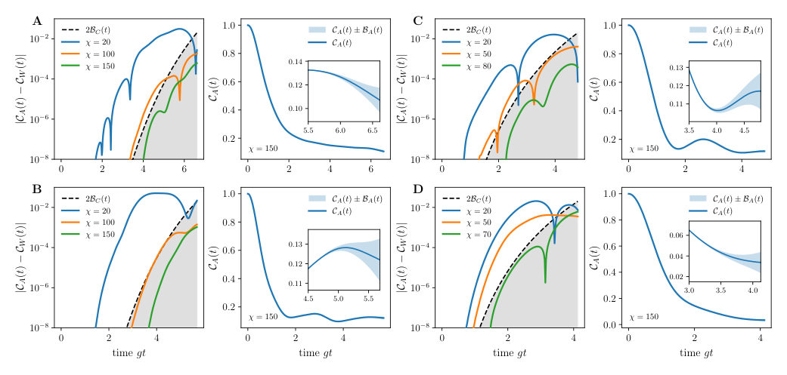
Summary. This paper develops a rigorous mathematical framework to bound the error when approximating quantum correlation functions using finite-window methods. By deriving a tight error bound, the authors provide a powerful tool to validate and improve numerical simulations of complex, non-integrable quantum many-body systems in 1D and 2D geometries.
Why it may be interesting. This work provides a crucial theoretical tool for analyzing non-equilibrium quantum dynamics in complex systems where exact simulation is impossible, offering quantifiable error control for numerical techniques like MPS/MPO.
Main problem. The exact simulation of non-integrable quantum systems is computationally intractable, and existing approximate methods lack rigorous guarantees on their error.
Main result. The authors derive a rigorous, computable error bound for approximating quantum correlation functions using finite-window methods, showing this bound is tighter than simpler estimates.
Method. The core method involves the window approximation, which decomposes the full system into a finite window and its environment, and then deriving error bounds for correlation functions using techniques involving operator deviations and the Hilbert-Schmidt norm.
Model / system. The analysis is applied to non-integrable quantum spin systems, specifically using the mixed-field Ising and isotropic Heisenberg models on 1D and 2D lattices.
Key observables. Quantum correlation functions, particularly the infinite-temperature autocorrelation function $C_j(t) = 2^{-n} ext{tr}(A_j(t)B)$.
Important parameters / regimes. System size (1D, 2D), time $t$, window radius $R$, and simulation parameters like bond dimension ($\chi$) and time step ($dt$).
Assumptions / limitations. The derivation relies on setting up and solving equations of motion for observable deviations ($\Delta A, \Delta B$) and assumes specific properties like $ ext{tr}([V, A_W]B_W) = 0$ under standard couplings.
Figures summary. Figures illustrate the window approximation concept (Fig. 1), compare the true error against derived bounds ($B_O(t)$ vs $B_C(t)$) for 1D systems (Fig. 2), show the accuracy dependence on window size $R$ (Fig. 3), and compare MPO vs. window approximations in 2D (Fig. 5).
Paper structure. The paper first establishes the necessity of approximation methods, derives the rigorous error bound $B_C(t)$ for the window approximation, applies this bound to 1D and 2D spin models, and finally compares the resulting error bounds against established MPO simulation results.
The exact classical simulation of non-integrable quantum systems rapidly becomes intractable beyond small system sizes, yet its role is central to predicting many-body dynamics. Approximate methods alleviate this cost but typically lack rigorous guarantees on their deviation from the exact result. For the infinite-temperature correlation function, we derive a rigorous error bound for approximating the full dynamics within a computable finite-sized region. Applied to autocorrelations, this finite-region approach is especially accurate across one-dimensional systems and beyond, and can further provide rigorous error bounds for other approximate methods, demonstrated here for matrix-product-operator simulations.
Authors: Yong-Zheng Ren, Mamutjan Ababekri, Jun-Lin Zhou, Feng Wan, Qian Zhao, Zhong-Peng Li, Kun Xue, Ya-Qing Huang, Zhao-Hui Chen, Zhong-Feng Xu, Jian-Xing Li
Type: theory · Category: other · PDF: https://arxiv.org/pdf/2609.35208v1
Analysis basis: full PDF text, analyzed in chunks
Topic relevance: interference shaping light 3/5 · Keldysh / 2PI / non-Gaussian methods 1/5
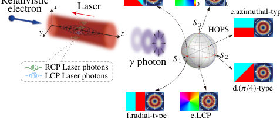
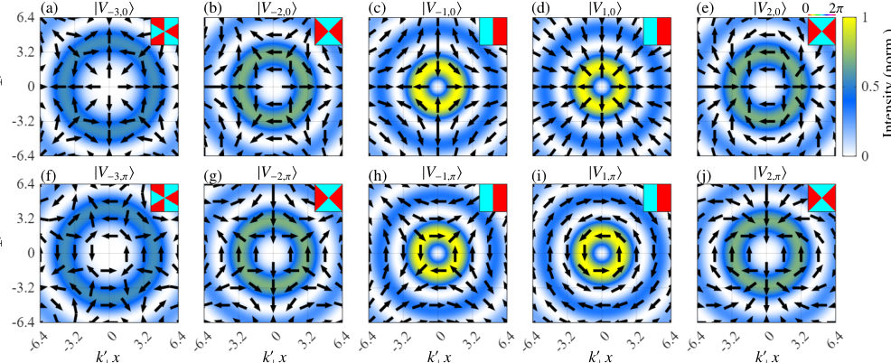
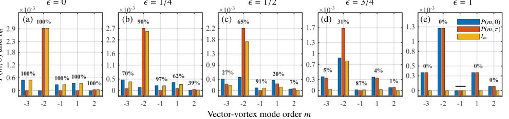
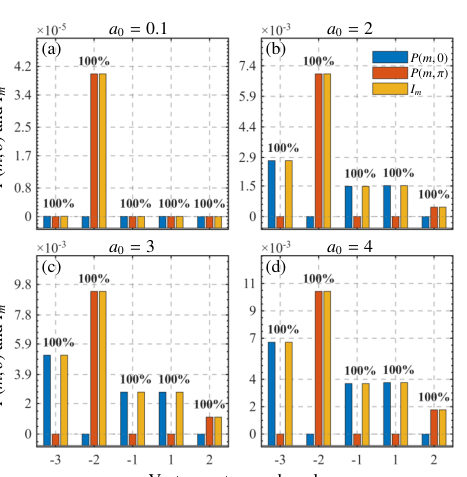
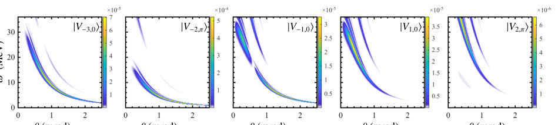
Summary. This paper presents a theoretical method to generate highly structured vector-vortex gamma photons via nonlinear Compton scattering using elliptically polarized lasers. By controlling the laser's ellipticity, the authors demonstrate the ability to achieve maximal spin-OAM entanglement in the resulting high-energy photons. This opens a new avenue for utilizing structured light concepts in nuclear-scale photonics and high-energy quantum information.
Why it may be interesting. This work bridges high-energy quantum electrodynamics (QED) with structured light concepts, providing a pathway to engineer quantum states of light at MeV energies, which is highly relevant for advanced quantum optics and high-energy physics applications.
Main problem. The primary challenge addressed is the generation of vector-vortex gamma photons, which are structured light states exhibiting a nonseparable coupling between polarization and orbital angular momentum (OAM), particularly in the high-energy gamma-ray regime.
Main result. The authors propose a novel mechanism using nonlinear Compton scattering (NCS) with elliptically polarized lasers, demonstrating that the mode-pair concurrence can reach unity for MeV gamma photons, realizing maximally nonseparable vector-vortex states.
Method. The analysis involves calculating the leading-order S-matrix element for NCS, projecting the emitted photon state onto a Bessel photon mode, and quantifying the spin-OAM entanglement using mode-pair concurrence.
Model / system. The physical system is the nonlinear Compton scattering process where an ultrarelativistic electron beam interacts head-on with an elliptically polarized laser pulse. The theoretical framework utilizes the Furry picture and Volkov states.
Key observables. Mode-pair concurrence (measure of spin-OAM entanglement), energy–angle resolved probability density ($d^2W_{VV}$), and HOPS coordinates.
Important parameters / regimes. Laser ellipticity ($\epsilon$), laser amplitude ($a_0$), and the resulting gamma-ray energy (MeV).
Assumptions / limitations. The analysis focuses on the non-spin-flip channel ($\lambda' = \lambda$), which dominates in the moderate-field regime ($a_0 \sim 1$), and assumes an ultrarelativistic NCS geometry.
Figures summary. Figures illustrate how laser ellipticity controls the photon state on the Higher-Order Poincaré Sphere (HOPS), showing transitions from scalar-vortex to vector-vortex states, and display energy-angle probability distributions for selected vector-vortex modes.
Paper structure. The paper develops the theoretical framework by calculating the scattering amplitude, analyzing the resulting photon state in a Bessel basis, and then demonstrating the control mechanism by tuning laser ellipticity ($\epsilon$) to maximize the spin-OAM concurrence.
Vector-vortex photons, characterized by a nonseparable coupling between polarization and orbital angular momentum (OAM), offer opportunities for optical manipulation, quantum communication, nuclear photonics, etc. However, their generation in the $γ$-ray regime remains challenging. Here, we put forward a novel method to generate vector-vortex $γ$ photons via nonlinear Compton scattering in elliptically polarized laser pulses. We reveal that tailoring laser ellipticity directs the multiphoton absorption to coherently populate OAM modes with opposite winding numbers, $\pm \ell$, tied to orthogonal circular polarizations, producing nonseparable spin-OAM photon states. For a linearly polarized laser of moderate intensity (dimensionless amplitude $a_0 \sim 1$), the mode-pair concurrence--a 0-to-1 measure of spin-OAM entanglement--reaches unity for MeV $γ$ photons, realizing maximally nonseparable radial- or azimuthal-type vector-vortex states. The laser amplitude further controls the accessible OAM spectrum. Our method offers a route to MeV vector-vortex photons, opening a new avenue for nuclear-scale structured photonics and high-energy quantum information.
Authors: Zirui Zhu, Zisheng Chen, Xiangyang Li
Type: both · Category: quantum information and computing · PDF: https://arxiv.org/pdf/2609.32911v1
Analysis basis: full PDF text, analyzed in chunks
Topic relevance: QC/QI experiment 3/5 · quantum measurements 1/5
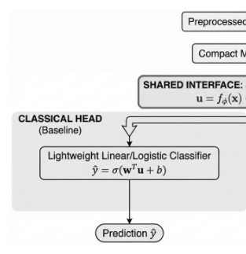
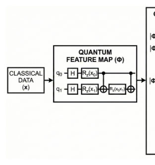
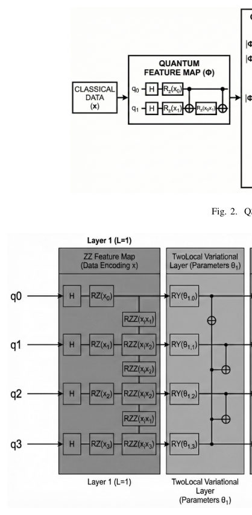
Summary. This paper investigates using hybrid Quantum Machine Learning models, combining classical feature compression with quantum classifiers (QSVM/VQC), for cybersecurity tasks like intrusion and spam detection. The authors benchmark these models on simulation and validate them on real quantum hardware, showing that carefully engineered quantum components can provide competitive, budget-aware performance even on small, noisy devices.
Why it may be interesting. While focused on cybersecurity, the work provides concrete, resource-aware benchmarks for applying quantum kernels (QSVM) and variational circuits (VQC) on near-term hardware, which is relevant for understanding noise-mitigated quantum computation.
Main problem. The paper addresses the gap in understanding how quantum components improve end-to-end threat detection in resource-constrained cybersecurity pipelines.
Main result. Shallow quantum heads, particularly the 4-qubit QSVM, modestly reduce missed attacks and false alarms on difficult near-boundary cases compared to classical models using the same features.
Method. A hybrid architecture is employed, using a classical MLP for feature compression followed by quantum heads (QSVM or VQC) for classification, benchmarked against classical counterparts.
Model / system. The system involves small quantum processors (NISQ era), validated on an IBM Quantum device. The models include QSVM using a fixed ZZFeatureMap and VQC using a trainable circuit structure.
Key observables. False Positive (FP) and False Negative (FN) shifts, macro-F1, AUROC, and AUPRC across intrusion and spam detection tasks.
Important parameters / regimes. Feature Budget ($q \in \{2, 4\}$), circuit depth, shot count, and adversarial perturbation strength ($\epsilon$).
Assumptions / limitations. The study assumes fixed preprocessing and MLP encoding to isolate the decision layer's contribution, and the remaining simulation-hardware gap is attributed to device noise.
Figures summary. Table IV shows robustness stress test results for the 4-qubit Ling-Spam MLP+QSVM, detailing performance drops under various adversarial attacks.
Paper structure. The paper first establishes the hybrid architecture, benchmarks it on two datasets (NSL-KDD, Ling-Spam) comparing QSVM and VQC, validates the best model on real hardware, and concludes by testing the model's robustness against adversarial attacks.
Under tight feature and compute budgets, classical threat detection pipelines often degrade on near-decision-boundary events. Small quantum processors are now available, but existing work inadequately shows whether quantum components improve end-to-end threat detection under the above resource constrained conditions. This paper tries to address this gap with a hybrid architecture that uses a compact multilayer perceptron layer to compress the information in data and then routes the processed features to a few qubit quantum heads implemented in quantum support vector machine (QSVM) and variational quantum circuit (VQC) models. On a simulation platform, we benchmark these hybrid models against classical models with comparable parameter budgets on two representative cybersecurity tasks, network intrusion detection on NSL-KDD dataset and spam filtering on Ling-Spam dataset. To validate their precision on real quantum hardware, we deploy the best 4-qubit QSVM model on an IBM Quantum device with noise-aware execution, evaluated on a smaller sub-dataset. In the results, shallow quantum heads consistently match, and on difficult near-boundary cases modestly reduce missed attacks and false alarms compared to classical models using the same features. Hardware validation results track the simulation behavior closely enough that the remaining gap is dominated by device noise rather than model design. Furthermore, we conduct adversarial attacks to test the robustness of one QSVM model. Taken together, the study shows that even on small, noisy devices, carefully engineered quantum components may function as competitive, budget-aware components in practical cyber threat detection applications.
Authors: Józef Spałek
Type: theory · Category: strongly correlated electrons · PDF: https://arxiv.org/pdf/2609.35178v1
Analysis basis: full PDF text, analyzed in chunks
Topic relevance: analog quantum simulation 3/5 · Keldysh / 2PI / non-Gaussian methods 1/5
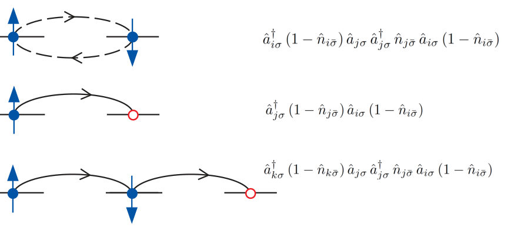
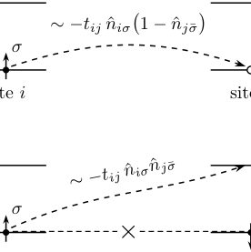
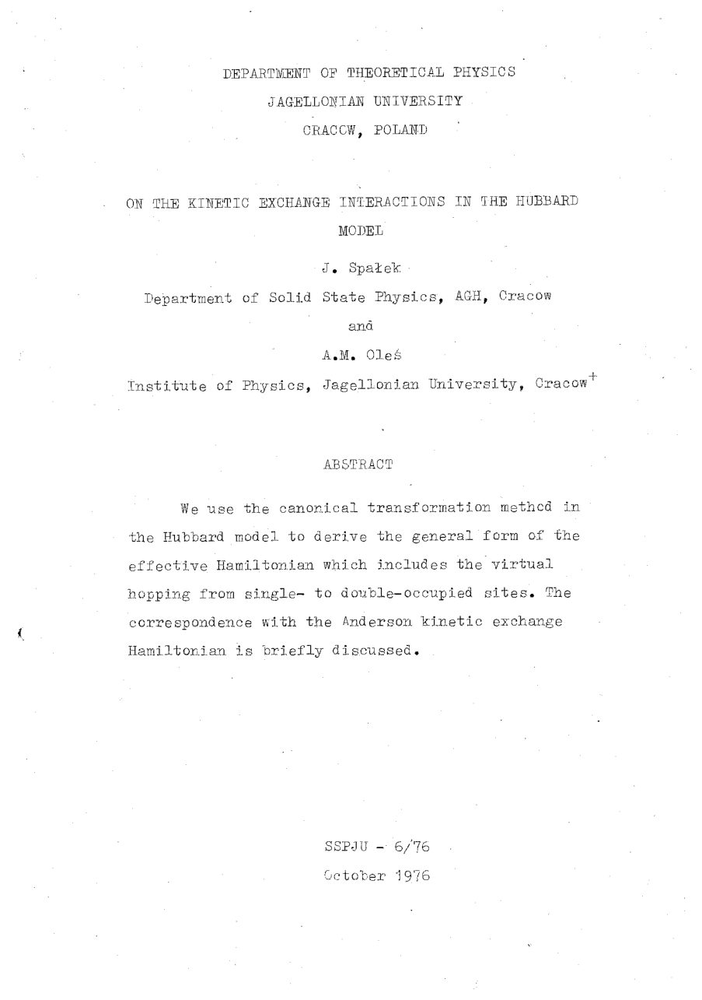
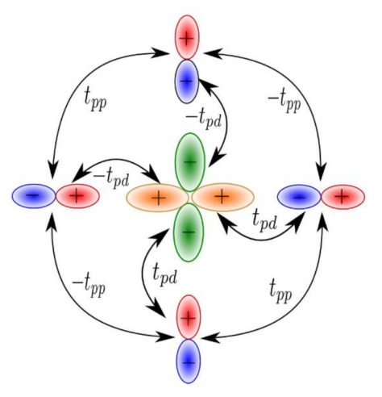
Summary. This paper reviews the theoretical framework of the t-J model, detailing its derivation from the Hubbard model to explain high-temperature superconductivity. It emphasizes the crucial role of kinetic exchange interactions and extends the analysis to multi-orbital systems to address the charge-transfer nature of the superconducting gap in cuprates.
Why it may be interesting. The detailed theoretical mapping from the Hubbard model to the t-J model, and the subsequent extension to three-band models, provides a foundational framework for understanding strongly correlated phenomena relevant to advanced quantum materials.
Main problem. The paper provides a comprehensive overview of the t-J model, aiming to characterize the fundamental physics linking magnetism, unconventional superconductivity, and Mott-Hubbard localization in correlated electron systems.
Main result. The t-J model effectively captures the physics of high-temperature superconductors by deriving an effective low-energy Hamiltonian from the Hubbard model via perturbation theory.
Method. The derivation relies on canonical perturbation expansions, systematically projecting the Hubbard model onto subspaces that exclude high-energy doubly occupied states.
Model / system. The primary model is the t-J model, derived from the Hubbard model, and extended to three-orbital systems relevant for cuprates. The Hamiltonian involves hopping integrals (t), on-site repulsion (U), and exchange couplings (J).
Key observables. Superconductivity (d-wave pairing), antiferromagnetism, charge gap mechanism, and the nature of the charge carrier (d-character vs. itinerant).
Important parameters / regimes. The ratio of hopping energy to on-site repulsion ($t/U$) is the crucial small parameter governing the effective low-energy physics.
Assumptions / limitations. The derivation assumes that the on-site repulsion $U$ is the largest energy scale ($U \gg |t_{ij}|$), allowing for a systematic expansion in powers of $t/U$.
Figures summary. Figure 1 illustrates various hopping processes, including virtual, real, and three-site hopping, used in the derivation of the effective Hamiltonian.
Paper structure. The paper first reviews the derivation of the t-J model from the Hubbard model in real-space and k-space, detailing the role of kinetic exchange. It then generalizes the model to three-orbital systems, discussing the transition from a Mott-Hubbard gap to a charge-transfer gap.
I briefly overview the original formulation of the t-J model starting from Hubbard model, as well as stress its unique features, i.e., advantages and shortcomings when discussing its physical properties. Particular emphasis is put on a brief characterization of connection between magnetism, unconventional superconductivity, and the Mott-Hubbard localization of the correlated carriers in a narrow band. In the second part I summarize the model generalization to the three--orbital situation. The main purpose is to list some basic features of the physics associated with t--J model.
Authors: Gil Kalai
Type: theory · Category: quantum information and computing · PDF: https://arxiv.org/pdf/2609.33508v1
Analysis basis: full PDF text, analyzed in chunks
Topic relevance: correlated / nonlocal dissipation 3/5 · quantum measurements 1/5
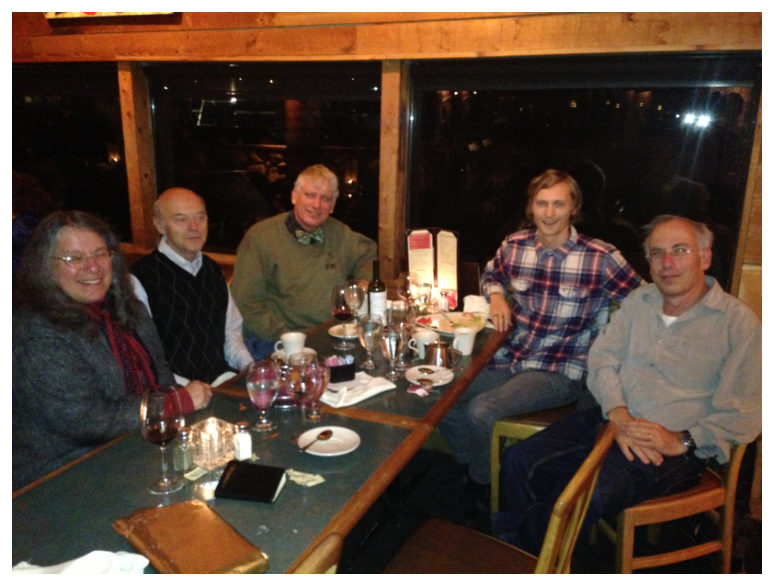
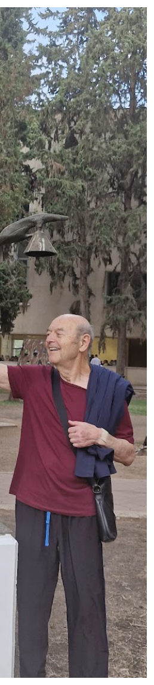
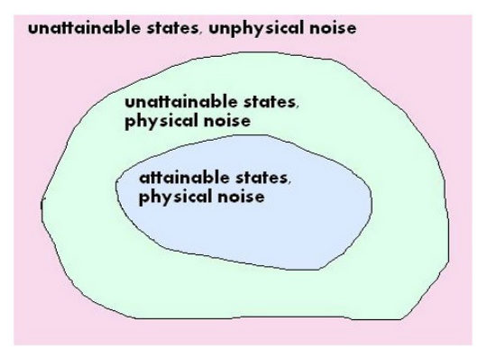
Summary. This paper re-examines the Fully Depolarizing Noise Conjecture, proposing that noise acting on entangled qubits must retain a specific, strong joint depolarizing component. This conjecture challenges standard assumptions about noise suppression in quantum computation, suggesting a fundamental structural hurdle for achieving scalable fault tolerance. The work analyzes this conjecture using theoretical models of noise channels.
Why it may be interesting. It provides a structural constraint on noise that goes beyond standard gate-level error models, which is crucial for understanding the fundamental limits of fault-tolerant quantum computation in realistic physical implementations.
Main problem. The paper revisits a conjecture stating that the effective noise channel on entangled qubits must contain a joint fully depolarizing component, potentially obstructing quantum fault tolerance.
Main result. The conjecture remains open, but it suggests that noise suppression mechanisms in quantum computation might be fundamentally limited by structural noise constraints rather than just gate fidelity.
Method. The analysis involves formulating the conjecture mathematically by comparing noise channels resulting from direct versus indirect entanglement generation in two-qubit systems.
Model / system. The focus is on two-qubit physical qubits, particularly entangled states like Bell pairs, and the effective noise channels acting on them under various physical noise models.
Key observables. The joint fully depolarizing component weight ($w_{AB}(E)$) of the effective noise channel, and the entropy of entanglement ($E(\psi)$).
Important parameters / regimes. The rate of fully depolarizing noise in elementary two-qubit entangling gates ($t$), and the entanglement amount ($\lambda$).
Assumptions / limitations. The analysis relies on comparing idealized noise models (e.g., direct vs. indirect construction) and critiques the assumptions underlying general threshold theorems.
Paper structure. The paper revisits the 2006 conjecture, formulates it for Bell and general entangled states, discusses implications for multi-qubit systems, and concludes with reflections on noise sensitivity and quantum advantage claims.
In this paper I revisit my 2006 conjecture on correlated errors in entangled physical qubits, originally proposed as a potential obstruction to quantum fault tolerance. The conjecture asserts that, in any physical implementation of a quantum computer, the effective noise channel acting on entangled physical qubits contains a joint fully depolarizing component, with a rate comparable to that of two-qubit gate errors. This hypothesized structural constraint goes beyond standard noise models and, if valid, would pose a significant challenge to scalable quantum fault tolerance. The conjecture remains open, but recent advances in experimental quantum computing bring it within reach of empirical testing on current devices. I also discuss two related directions in my critical study of quantum computation: the role of noise sensitivity and computational complexity in noisy intermediate-scale quantum systems, and the statistical analysis of experimental claims of quantum advantage. Finally, since this paper is written for a volume honoring Yuri Gurevich, I include some reflections on the ways in which my scientific and personal trajectory became intertwined with Yuri's.
Authors: Swarnamoy Ghosh, Thomas M. Henderson, Gustavo E. Scuseria
Type: theory · Category: strongly correlated electrons · PDF: https://arxiv.org/pdf/2609.34128v1
Analysis basis: full PDF text, analyzed in chunks
Topic relevance: analog quantum simulation 3/5




Summary. This work develops and applies Bogoliubov coupled-cluster theory to study strongly correlated systems governed by su(2) symmetry, such as Heisenberg and pairing models. By utilizing BCS-like reference states, the method overcomes limitations of standard CC theory in strongly correlated regimes. It provides a systematic, wave-function-based framework to calculate key magnetic and pairing correlation functions.
Why it may be interesting. The rigorous treatment of correlation effects in spin systems using a BCS-derived reference state and calculating response functions is highly relevant for understanding magnetic ordering and quantum magnetism in condensed matter.
Main problem. The paper addresses the breakdown of standard coupled-cluster theory in strongly correlated systems, particularly those with an underlying su(2) algebra.
Main result. Bogoliubov coupled-cluster (BCC) theory is shown to be a systematically improvable, wave-function-based approach for su(2) Hamiltonians, applicable even to geometrically frustrated spin systems.
Method. The authors employ the BCC formalism, extending CC theory by using BCS-like reference states (sBCS) to handle strong correlations, and calculating response properties via linear response theory.
Model / system. The theory is applied to the pairing Hamiltonian and spin models like the XXZ and J1-J2 Heisenberg models, which possess an underlying su(2) symmetry algebra.
Key observables. Spin-spin correlation functions, pairing parameter, particle-number variance, and the total derivative of the CC functional.
Important parameters / regimes. The theory is benchmarked across various approximations (CCSDTQ) and includes analysis of orbital relaxation effects.
Assumptions / limitations. The primary assumption is that the BCC framework provides a systematic improvement over mean-field approaches, though the reference state choice is critical.
Figures summary. Figures illustrate spin-spin correlation functions and direction-resolved correlations for the J1-J2 model on a triangular lattice.
Paper structure. The paper develops the BCC formalism for su(2) Hamiltonians, details the calculation of ground state energies and response properties, and rigorously incorporates orbital relaxation effects when calculating derivatives.
Coupled-cluster theory is the method of choice for weakly correlated systems, but in strongly correlated systems where the mean-field reference is qualitatively poor, it can break down badly. These failures can be ameliorated by using symmetry-broken mean-field references. For systems that spontaneously break spin symmetry, we might favor an unrestricted reference. In systems that instead break number symmetry, we turn to Bogoliubov coupled cluster theory. In this work, we apply Bogoliubov coupled-cluster to Hamiltonians with an underlying su(2) algebra to study the pairing Hamiltonian and the spin XXZ and J1-J2 models by exploiting the correspondence between fermionic-pair operators and spin-1/2 operators. For the pairing problem, the reference is the usual Bardeen--Cooper--Schrieffer (BCS) quasiparticle vacuum, while for spin systems we use the analogous spin-BCS reference, which breaks Sz symmetry and provides a flexible starting point for strongly correlated regimes. Correlation is incorporated through a hierarchy of coupled-cluster approximations. Beyond energies, we compute the response density matrices for the evaluation of spin--spin correlation functions for the XXZ and J1-J2 Heisenberg models, and the pairing parameter and particle-number variance for the pairing Hamiltonian. We also derive the corresponding relaxed density matrices, including the effects of orbital relaxation. Benchmark calculations for the half-filled pairing Hamiltonian and spin models demonstrate that Bogoliubov coupled cluster provides a systematically improvable wave-function-based approach for su(2) Hamiltonians, including geometrically frustrated spin systems requiring complex and noncollinear BCS references.
Authors: Chen-Xin Jiang, Zi-Xiang Hu, Bo Yang
Type: theory · Category: strongly correlated electrons · PDF: https://arxiv.org/pdf/2609.31831v1
Analysis basis: full PDF text, analyzed in chunks
Topic relevance: analog quantum simulation 3/5
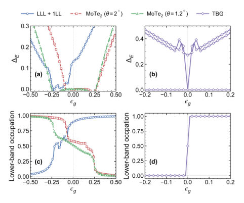
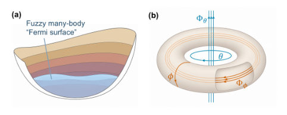
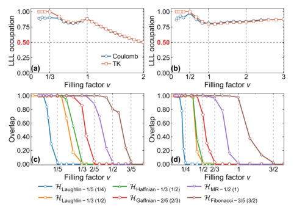
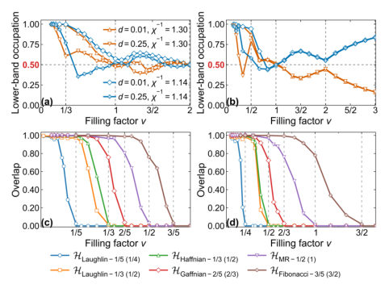
Summary. This work develops a theoretical framework using Conformal Hilbert Spaces (CHS) to identify the low-energy subspace in strongly correlated systems like those found in Chern bands. By calculating a quantum metric, the authors show that interactions naturally select a specific, robust subspace, explaining phenomena like band polarization in Landau levels. This provides a systematic way to analyze complex interacting electron systems.
Why it may be interesting. The use of the CHS framework provides a powerful, algebraic tool to predict the low-energy physics of interacting electrons in topological materials, which is highly relevant for understanding correlated topological phases.
Main problem. The paper aims to characterize the low-energy, physically relevant many-body subspace ($\bar{F}_s$) in strongly correlated quantum systems where the full Hilbert space is intractable.
Main result. The low-energy physics is governed by Conformal Hilbert Spaces (CHS), which naturally select the most relevant subspace based on particle density and interaction strength.
Method. The authors systematically construct the relevant subspace using the framework of Conformal Hilbert Spaces (CHS) and compute the many-body quantum metric to quantify interaction energy scales.
Model / system. The study focuses on systems exhibiting Chern bands, particularly Landau levels (LLs) and flat-band limits, applied to materials like twisted MoTe2 and magic-angle twisted bilayer graphene (TBG).
Key observables. Many-body quantum metric ($\chi^{-1}$), band occupation fraction, and the many-body energy gap ($\Delta E$).
Important parameters / regimes. Particle density, interaction type (Coulomb, Yukawa), and the band gap ($\epsilon_g$), especially in the strong interaction limit.
Assumptions / limitations. The low-energy physics is assumed to be governed by the CHS with the smallest vacuum filling factor greater than the actual filling factor.
Figures summary. Figures illustrate energy gaps and band occupation fractions for LLs, tMoTe2, and TBG across varying gap conditions, alongside detailed finite-size scaling plots for occupation and energy differences.
Paper structure. The paper progresses from defining the problem in general Chern bands to applying the CHS formalism, calculating the quantum metric, and finally performing detailed finite-size scaling analyses on specific material models (LLs, tMoTe2, TBG) under various interaction strengths.
We show that in Landau levels and more generic Chern bands, the most relevant many-body subspace selected by realistic two-body interactions alone (e.g., in the limit of vanishing bandwidth and band gap) depends strongly on the particle density and can be constructed systematically. Using the well-defined hierarchical structure of conformal Hilbert spaces (CHS), each with a highest-density vacuum state, we compute, for both fermionic and bosonic systems, the many-body quantum metric that quantifies the interaction energy scales of these subspaces. For a large family of short-range, Coulomb-based interactions, particles preferentially occupy the many-body states in the smallest accommodating CHS. This allows us to describe the low-energy physics of the interacting system in terms of the appropriate anyonic degrees of freedom. Our results also explain why, in any Chern band (in lattice or continuum systems), band mixing tends to be suppressed even in the limit of strong interaction; this suppression is stronger when the band deviates less from the ideal trace condition and when the two-body interaction is shorter-ranged.
Authors: Roberto Bernal-Jaquez, Hector H. Hernandez-Hernandez, Alexander Schaum, Guillermo Chacon-Acosta
Type: theory · Category: other · PDF: https://arxiv.org/pdf/2609.32709v1
Analysis basis: full PDF text, analyzed in chunks
Topic relevance: analog quantum simulation 3/5
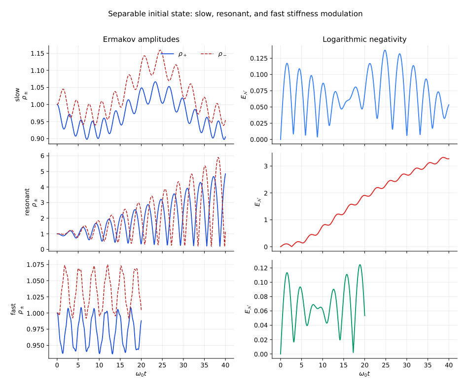

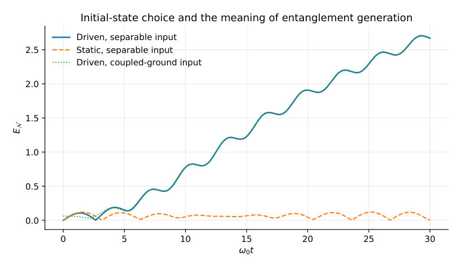
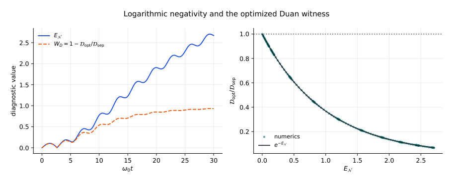
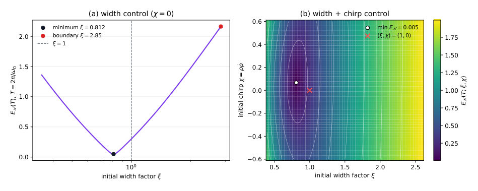
Summary. This paper provides an exact, closed-form solution for the entanglement dynamics in two coupled parametric oscillators. By utilizing the Lewis-Riesenfeld invariant, the authors show that entanglement is governed by a single relative invariant $X$. Crucially, they demonstrate that the initial state's width and chirp act as independent controls to deterministically set the entanglement level at any future time.
Why it may be interesting. This work provides an exact, closed-form analytical framework for quantifying and controlling entanglement in a physically relevant system (parametric oscillators), directly applicable to trapped-ion or cavity QED setups.
Main problem. The study aims to determine how entanglement can be generated and controlled between two coupled harmonic oscillators using common time-dependent frequency modulation, starting from an initially separable state.
Main result. The entanglement dynamics are exactly solvable and governed by a single relative invariant $X$, allowing initial width and chirp to act as two independent, experimentally accessible controls for the entanglement at a target time.
Method. The authors employ the Lewis-Riesenfeld invariant method and solve the system exactly by transforming it into two independent parametric oscillators, analyzing the resulting Gaussian state via its covariance matrix.
Model / system. The model consists of two bilinearly coupled harmonic oscillators described by a time-dependent Hamiltonian. The analysis is performed in the normal-mode basis, which decouples the system into two parametric oscillators.
Key observables. Logarithmic negativity ($E_N$), the optimized Duan witness ($D_{ ext{opt}}$), and the relative invariant $X$.
Important parameters / regimes. Initial width ($\xi$) and chirp ($\chi$) are key control parameters; the system is analyzed near parametric resonance.
Assumptions / limitations. The analysis assumes the initial state is a pure Gaussian state that is a product in the normal-mode basis, and the system is treated without considering thermal loss or dephasing.
Figures summary. Figures illustrate the dependence of $E_N$ on control parameters ($\xi, \chi$), compare $E_N$ to magnitude-only predictions, and show normal-mode trajectories on the $SU(1, 1)$ disk.
Paper structure. The paper establishes the exact solution using the LR invariant, derives the closed-form expression for $E_N$ in terms of $X$, compares this to entanglement witnesses like the Duan criterion, and finally demonstrates the control landscape using initial state parameters.
We study two bilinearly coupled harmonic oscillators driven by a common time-dependent spring. A fixed normal-mode transformation reduces the pair to two parametric oscillators, each solved exactly by its Lewis-Riesenfeld invariant and Ermakov-Pinney amplitude, including the ladder-operator construction and the Lewis-Riesenfeld phase. For invariant-vacuum inputs the physical two-mode covariance matrix is obtained in closed form, and the logarithmic negativity collapses to $E_{N}=\frac{1}{2} \operatorname{arcosh}(X/2)$, where a single dimensionless invariant $X \geq 2$ measures the relative phase-space deformation of the two normal modes. We give a normalization-explicit account of the Duan--Simon comparison: after local symplectic optimization the Duan test and the positive partial transpose share the entanglement threshold for this pure exchange-symmetric Gaussian family, but the optimized Duan quantity is a witness, not an independent measure, with $D_{\rm opt}/D_{\rm sep}=e^{-E_N}$. We carefully separate a genuinely separable product preparation from the already-entangled ground state of the coupled Hamiltonian, and use only the former for claims of entanglement generation. Under sinusoidal stiffness modulation a separable input shows bounded correlations away from resonance and sustained growth near parametric resonance, and we demonstrate numerically that the initial width and chirp act as two independent, experimentally accessible controls of the entanglement at a chosen target time. An $SU(1,1)$ formulation identifies $2 E_{N}$ with the hyperbolic separation of the two normal-mode squeezing trajectories on the $SU(1,1)/U(1)$ disk and shows that entanglement is governed by both the relative squeezing magnitude and the relative squeezing angle; ; we exhibit regimes in which nearly equal magnitudes still produce strong entanglement through the angle alone.
Authors: Saeed Barari, Yasir Iqbal, Ganapathy Baskaran, Saeed S. Jahromi, Chunxiao Liu, Julien Vidal
Type: theory · Category: strongly correlated electrons · PDF: https://arxiv.org/pdf/2609.33454v1
Analysis basis: full PDF text, analyzed in chunks
Topic relevance: analog quantum simulation 3/5
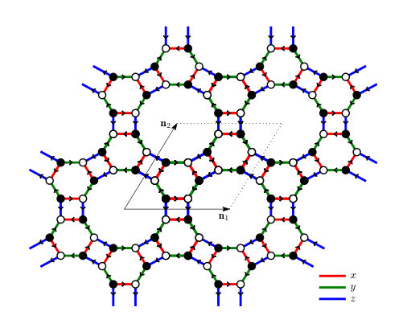
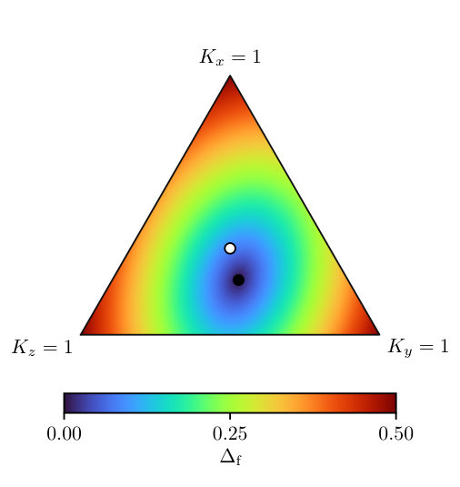
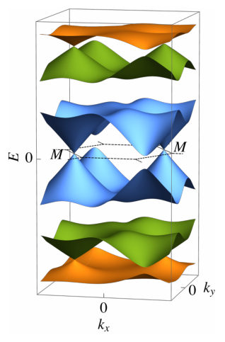
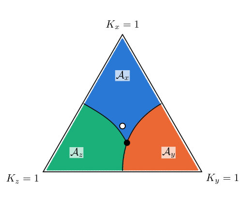
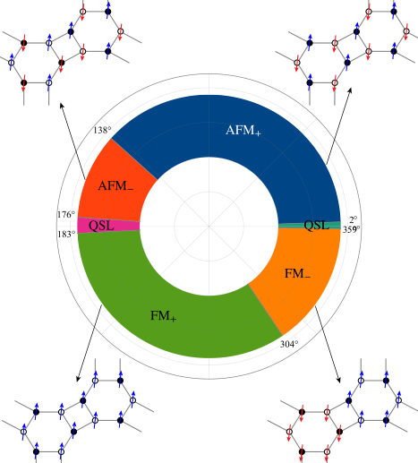
Summary. This work thoroughly investigates the Kitaev-Heisenberg model on the square-hexagon-dodecagon lattice, mapping out its complex phase diagram. By combining Majorana fermion theory with advanced numerical simulations, the authors distinguish between topological quantum liquid phases and various magnetically ordered states. The results provide a detailed understanding of how geometric frustration and competing interactions govern the ground state properties of this quantum magnet.
Why it may be interesting. The detailed study of topological phases and magnetic ordering on complex lattices like the SHD is highly relevant for understanding exotic quantum materials and frustrated magnetism, which often exhibit strong electron correlations.
Main problem. The study investigates the complex quantum phases arising from the interplay between Kitaev and Heisenberg interactions on the geometrically rich square-hexagon-dodecagon (SHD) lattice.
Main result. The authors map out the phase diagram, identifying robust topological (toric code) phases alongside four distinct collinear magnetically ordered phases in the isotropic limit.
Method. A combination of theoretical techniques was employed, including mapping the pure Kitaev model to Majorana fermions, and using advanced numerical methods like gPEPS, exact diagonalization, and linear spin-wave theory for the full model.
Model / system. The system is the spin-1/2 Kitaev-Heisenberg model defined on the SHD lattice, characterized by a Hamiltonian combining Kitaev ($K_\alpha$) and Heisenberg ($J$) exchange terms.
Key observables. The primary observables include the energy spectrum (gapped vs. gapless), the nature of topological excitations (e and m anyons), and the characterization of magnetic order via local and relative plaquette orderings.
Important parameters / regimes. Key parameters are the coupling constants ($K_x, K_y, K_z, J$), and the analysis explores anisotropic and isotropic coupling regimes.
Assumptions / limitations. The analysis relies on a symmetry-preserving tri-coloring of the Kitaev exchanges and uses LSWT as a phase-interior benchmark, acknowledging its limitations near quantum critical points.
Figures summary. Figures illustrate the lattice structure and tri-coloring, the Majorana spectrum showing Dirac cones, the relative assignments of plaquette vortices, and the overall phase diagram in the $(K, J)$ space.
Paper structure. The paper proceeds by first analyzing the pure Kitaev model via Majorana fermion mapping, then tackling the full Kitaev-Heisenberg model using a combination of gPEPS, ED, and LSWT to map out the complete phase diagram and characterize the different ordered and topological regimes.
We study the spin-$1/2$ Kitaev-Heisenberg model on the square-hexagon-dodecagon lattice with a symmetry-preserving tri-coloring of the Kitaev exchanges. We focus on two cases: (i) the pure Kitaev model with anisotropic exchanges and (ii) the Kitaev-Heisenberg model with isotropic Kitaev exchange. In the absence of Heisenberg interactions, we use the standard mapping of the Kitaev model onto a quadratic Majorana-fermion problem in a $\mathbb{Z}_2$ gauge field. We find a gapped energy spectrum throughout the positive-coupling phase diagram, except at a single point where the twofold-degenerate energy bands form a Dirac cone. This unique gapped region corresponds to a toric code phase. However, depending on the couplings, vortex excitations on square, hexagonal, and dodecagonal plaquettes realize three distinct relative assignments to the $e$ and $m$ anyons. We determine these relative assignments from the physical fermion parity of the vortex sectors and locate their boundaries by tracking zero crossings of vortex-bound Majorana levels. For the isotropic Kitaev-Heisenberg model, we combine graph-based projected entangled-pair-state calculations, exact diagonalizations, and linear spin-wave theory to study the entire phase diagram. Apart from the toric code topological phases that are robust around the Kitaev limits, we obtain four collinear magnetically ordered phases that can be characterized by their local and relative orderings of hexagonal plaquettes. We also identify a special point at which the ground state is a product state.
Authors: Shamminuj Aktar, Reuben Tate, Stephan Eidenbenz
Type: theory · Category: strongly correlated electrons · PDF: https://arxiv.org/pdf/2609.31977v1
Analysis basis: full PDF text, analyzed in chunks
Topic relevance: analog quantum simulation 3/5
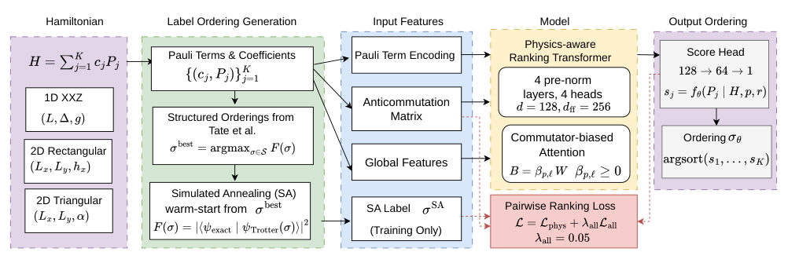
Summary. This paper introduces a physics-aware ranking transformer to solve the computationally intractable problem of finding the optimal term ordering for Trotterization of Heisenberg Hamiltonians. By learning the ordering directly from physical principles and simulated annealing data, the model achieves high simulation fidelity on large, complex quantum systems. This offers a significant computational advantage for simulating quantum magnets.
Why it may be interesting. This work directly addresses the computational bottleneck in simulating quantum dynamics for magnetic materials (Heisenberg models) by providing a data-driven, scalable method to optimize the Trotter decomposition step.
Main problem. The core problem is minimizing the error introduced when approximating quantum time evolution using Trotterization, which is highly dependent on the ordering of non-commuting Hamiltonian terms.
Main result. The learned transformer model successfully predicts near-optimal Trotter orderings for Heisenberg Hamiltonians on various lattices, often matching or exceeding the fidelity of established Simulated Annealing reference orderings.
Method. A physics-aware ranking transformer is trained to assign a scalar score to each Hamiltonian term, predicting the optimal ordering by sorting these scores in a single forward pass.
Model / system. The study focuses on 1D and 2D Heisenberg-style Hamiltonians on chains, triangular, and rectangular lattices, using first- and second-order Trotterization formulas.
Key observables. Simulation fidelity (squared overlap) and the median gap in simulation fidelity compared to the SA reference.
Important parameters / regimes. Trotter order (first/second), system size (up to 20 qubits/lattices), and lattice geometry (chain, triangular, rectangular).
Assumptions / limitations. The model is trained on SA-derived reference orderings, and its performance is tested on extrapolation ranges beyond the training set sizes.
Figures summary. Figures compare the fidelity gap between the learned ordering, the SA reference, and random orderings across different lattice geometries and Trotter orders.
Paper structure. The paper introduces the problem of Trotter ordering, details the physics-aware transformer architecture incorporating commutator-biased attention and specialized loss functions, presents results comparing the learned orderings against SA benchmarks across multiple lattice types, and concludes with generalization analysis.
Trotterization approximates quantum time evolution by sequentially applying Hamiltonian terms. Because noncommuting terms introduce ordering-dependent errors, selecting an optimal term ordering is a combinatorial problem over a factorial search space. Prior approaches rely on fixed heuristics or on selection among predefined structured orderings, both of which require simulating candidates before choosing among them. For 1D and 2D Heisenberg-style Hamiltonians, we instead learn the ordering directly with a physics-aware ranking transformer that assigns a scalar score to each Hamiltonian term and predicts an ordering by sorting these scores. Physical structure enters through commutator-biased attention and an anticommutation-weighted ranking loss, and the models are trained on simulated-annealing (SA) reference orderings. We train separate models for first- and second-order Trotterization, each jointly on chains up to 14 qubits and lattices up to 12 qubits, and evaluate them on unseen chains with 16-20 qubits and lattices with 16 and 20 qubits. Predicted orderings are evaluated by the median gap in simulation fidelity to the SA reference. At first order, the model reaches a pooled gap below 10^-4 on chains, 0.0144 and 0.0088 on triangular lattices, and 0.0948 and 0.0823 on rectangular lattices at 16 and 20 qubits; at second order, the gaps are 0.0114, 0.0364 and 0.0244, and 0.1348 and 0.1239. The prediction exceeds the SA reference on 34% of first-order and 8% of second-order chain instances and can match its fidelity even when the two sequences differ because commuting terms may be rearranged without changing the Trotter unitary. The learned models generalize to larger systems across all three geometries, performing best on chains and triangular lattices, and produce an ordering in one forward pass without candidate enumeration, simulated annealing, or fidelity evaluation.
Authors: Pablo Á. Domínguez, Christopher Chubb, Mischa P. Woods
Type: theory · Category: other · PDF: https://arxiv.org/pdf/2609.31837v1
Analysis basis: full PDF text, analyzed in chunks
Topic relevance: quantum measurements 3/5
Summary. This paper develops a theoretical framework to determine the precision of physical clocks using only multiple copies of the clock itself, bypassing the need for an ideal external time standard. It derives rigorous mathematical bounds connecting theoretical precision measures ($R$) to experimentally measurable quantities ($E[ au]$). This work provides novel tools for quantum metrology and fundamental physics measurements.
Why it may be interesting. The rigorous mathematical framework developed for characterizing fundamental physical constants (like time) using only internal statistical properties is highly relevant to quantum metrology and the theoretical limits of measurement in quantum optics.
Main problem. The paper addresses how to quantify the intrinsic precision of physical clocks without relying on an ideal or external time reference.
Main result. It establishes analytic bounds and protocols showing that clock precision, characterized by $R$, can be inferred operationally using only multiple copies of the same clock.
Method. The analysis employs advanced stochastic processes, renewal theory, and martingale techniques to relate theoretical precision measures to experimentally measurable quantities derived from multiple clock ticks.
Model / system. The system models clocks as devices emitting time information via discrete, independently distributed 'ticks' with a measurable mean ($\mu$) and variance ($\sigma^2$).
Key observables. Clock precision ($R = \mu^2/\sigma^2$), Allan deviation ($\sigma_A( au)$), and an experimentally derived figure of merit $E[ au]$ from double-tick measurements.
Important parameters / regimes. The number of clock copies ($N$), the measurement time interval ($ au$), and the initial offset ($\Delta$ or $\delta$).
Assumptions / limitations. The tick intervals are assumed to be independent and identically distributed (i.i.d.), and the results often rely on asymptotic limits (e.g., $N o \infty$ or $R o \infty$).
Figures summary. Figure 1 illustrates the general concept of clock ticks; Figure 2 details the double-tick experiment used to define the operational measurement $E[ au]$.
Paper structure. The paper progresses from defining the fundamental problem (lack of ideal reference) to introducing theoretical bounds ($R$), developing operational measurements ($E[ au]$) using multiple copies, and finally deriving rigorous asymptotic theorems relating these quantities.
Characterising physical devices typically requires comparison with more precise reference standards. For clocks, however, this approach is problematic because no physically perfect time reference exists; real clocks have finite, model-dependent uncertainty. We address whether multiple imperfect clocks can collectively determine their precision without an absolute reference. This paper provides analytic bounds and protocols for quantifying clock precision using only multiple copies of the same clock, which need not be synchronised and may have manufacturing variations or environmental coupling. Beyond clock characterisation, these methods enable precise measurements f sub-period intervals and relativistic effects such as time dilation and Doppler shifts, providing tools for quantum metrology and fundamental physics.
Authors: Sevag Gharibian, François Le Gall, Ranitha Mataraarachchi, Suguru Tamaki
Type: theory · Category: quantum information and computing · PDF: https://arxiv.org/pdf/2609.34532v1
Analysis basis: full PDF text, analyzed in chunks
Topic relevance: analog quantum simulation 3/5
Summary. This work develops faster quantum algorithms for estimating the ground-state energy and preparing the low-energy state of general $k$-local Hamiltonians. By utilizing a probabilistic argument based on the depolarizing channel, the authors derive improved lower bounds on the required computational resources. This advances the theoretical understanding of quantum simulation complexity for many-body systems.
Why it may be interesting. The development of new, tighter quantum complexity bounds for fundamental problems like ground-state energy estimation is crucial for assessing the feasibility of quantum simulation algorithms in condensed matter physics.
Main problem. The paper addresses the fundamental challenge of efficiently estimating the ground-state energy and preparing the corresponding low-energy state for general $k$-local Hamiltonians.
Main result. They present quantum algorithms achieving a runtime complexity governed by the binary entropy function, offering a speedup factor of $\log(k/\epsilon)$ over previous state-of-the-art bounds.
Method. The analysis employs a probabilistic argument using the qubit depolarizing channel, which allows deriving rigorous lower bounds on the dimension of the low-energy subspace.
Model / system. The focus is on $n$-qubit $k$-local Hamiltonians, $H = \sum h_\alpha$, where $k$ is constant relative to $n$. Specific models analyzed include Heisenberg, XY, and Ising models.
Key observables. Ground-state energy ($\lambda_0$), low-energy subspace dimension, and the overlap between the projector onto the low-energy space and the depolarized state ($ ext{Tr}(P ho_b)$).
Important parameters / regimes. Relative error $\epsilon$, locality $k$, total interaction strength $M$, and the depolarization parameter $b$.
Assumptions / limitations. The algorithms assume $k$-locality of the Hamiltonian and rely on the properties of the depolarizing channel for bounding the state's moments.
Figures summary. The notes mention a comparison table (Table 1) showing the time complexity exponent for different $k$ and $\epsilon$, and a second table (Table 2) comparing entropy arguments for various models against the general bound.
Paper structure. The paper builds from defining the problem and benchmarking against prior work (BGLGST). It develops the core technical machinery using the depolarizing channel to derive density-of-states lower bounds, culminating in the improved quantum algorithms and their application to specific physical models.
Low-energy estimation and state preparation for general $k$-local Hamiltonians are fundamental challenges in quantum complexity theory. Buhrman et al.~ [BGLGST, PRL 2025] recently broke the natural Grover bound $O^\ast(2^{n/2})$ for both problems, with the improvement depending on the relative accuracy $\varepsilon$ and the locality $k$. In this work, we present faster exponential quantum algorithms for these problems, where the binary entropy function governs the runtime exponent. For sufficiently small $\varepsilon/k$, our algorithms improve the exponent by a factor of $\log(k/\varepsilon)$ over [BGLGST, PRL 2025]. Our main technical result is an entropy-governed lower bound on the dimension of the Hamiltonian's low-energy subspace, obtained by depolarizing its ground state. For fixed $k$, this bound is optimal up to constant factors in the exponent. The same framework yields tighter bounds for Heisenberg, $XY$, and Ising models on arbitrary interaction graphs.
Authors: Zibin Zhao, Xinyi Tang, Tianmiao Zhang, Zhaopin Chen, Huanbo Luo, Guihua Chen, Bin Liu, Boris A. Malomed, Yongyao Li
Type: theory · Category: quantum gases · PDF: https://arxiv.org/pdf/2609.32342v1
Analysis basis: full PDF text, analyzed in chunks
Topic relevance: analog quantum simulation 3/5
Summary. This paper investigates vortex quantum droplets in dipolar BECs, showing that strong dipole-dipole anisotropy dictates their structure and stability. The authors demonstrate that the system supports robust vortex states, but the dynamics—including core splitting, collision outcomes, and response to external tuning—are critically dependent on the sign and magnitude of the dipole interaction. It highlights dipolar BECs as a versatile platform for studying topological matter.
Why it may be interesting. This work is highly relevant to AMO physics as it explores how engineered long-range, anisotropic interactions (like those from dipolar molecules) fundamentally reshape the topological excitations and collective dynamics of quantum fluids, providing a platform for realizing complex quantum states.
Main problem. The study investigates how strong, anisotropic dipole-dipole interactions affect the structure, stability, and dynamics of pancake-shaped vortex quantum droplets (QDs) in dipolar molecular Bose-Einstein Condensates (BECs).
Main result. The research demonstrates that the strong anisotropy dictates the droplet morphology and stability, showing that positive tuning preserves the vortex state while negative tuning causes fragmentation. Higher-charge vortices exhibit core splitting, and collisions lead to distinct regimes like rebound or merger.
Method. The study employs theoretical modeling using an extended Gross-Pitaevskii equation, solving for stationary states via Imaginary-Time Propagation (ITP) and analyzing stability through real-time simulations.
Model / system. The system is a dipolar molecular BEC, modeled by an extended Gross-Pitaevskii equation incorporating contact interactions and a long-range, tunable dipole-dipole interaction (DDI). The anisotropy is controlled by tuning the DDI term $\epsilon^{(2)}_{dd}$.
Key observables. Pancake-shaped morphology, stability regions, normalized angular momentum ($L_X$), anisotropy factor ($\kappa_{ZY}$), and the chemical potential ($\mu$) vs. particle number ($N$).
Important parameters / regimes. The degree of dipole-dipole anisotropy ($\epsilon^{(2)}_{dd}$), the particle number ($N$), and the separation distance between vortex cores ($d$).
Assumptions / limitations. The system is treated within a mean-field approximation using the Gross-Pitaevskii equation, and stability is assessed using the Vakhitov-Kolokolov criterion.
Figures summary. Figures illustrate the 3D isosurface and 2D density profiles of vortex QDs, stability diagrams in the $(N, \epsilon^{(2)}_{dd})$ plane, and the evolution of the system under external driving ($\epsilon^{(0)}_{dd}$) or during head-on collisions.
Paper structure. The paper systematically analyzes the structural consequences of anisotropic DDI, first establishing the robust nature of $S=1$ vortices, then detailing the core splitting for $S=2$ vortices, and finally exploring the dynamic regimes resulting from collisions and external tuning of the DDI component.
Anisotropic interactions profoundly affect topological excitations in quantum fluids. Motivated by recent advances in the studies of microwave-shielded polar molecules, we introduce self-trapped modes in the form of pancake-shaped quantum droplets (QDs) with embedded vorticity, which are maintained by strongly anisotropic dipole-dipole interactions. The stability region of singly charged ($S=1$) vortices nearly coincides with that of the ground-state QDs ($S=0$), demonstrating the robustness of the vortex states. The strong anisotropy of the system splits the core (pivot) of vortex QDs with $S=2$ into separated unitary ones. The angular momentum and stability of the state with $S=2$ are affected by the separation between the unitary cores. Higher-charge vortex QDs with $S>2$ are stable too, for sufficiently large particle numbers and inter-core separations. On the other hand, bound vortex-antivortex pairs with $S=\pm 1$ are unstable. Head-on collisions between the vortex QDs exhibit distinct regimes, including rebound, merger, and fragmentation. Tuning the cylindrically symmetric component of the dipolar interaction reveals a pronounced sign-dependent response: positive tuning preserves the self-bound vortex, whereas negative tuning drives expansion and fragmentation. The results demonstrate that the microwave-dressed molecular QDs offer a robust platform for the realization of self-trapped vortex states, demonstrating how the strong anisotropy reshapes their structure, stability, and dynamics.
Authors: Ruth Mora-Soto, André Grossi Fonseca, Raul Perea-Causin, Hui Liu, Emil J. Bergholtz, Marin Soljačić
Type: theory · Category: strongly correlated electrons · PDF: https://arxiv.org/pdf/2609.31846v1
Analysis basis: full PDF text, analyzed in chunks
Topic relevance: analog quantum simulation 3/5
Summary. This paper demonstrates that modulated Bernal bilayer graphene can host non-Abelian fractional quantum Hall states, specifically the Read-Rezayi insulator, without requiring an external magnetic field. The authors use advanced numerical techniques, including target-phase optimization and entanglement spectrum analysis, to map out the required parameter space. This work establishes a promising solid-state platform for realizing complex topological quantum matter.
Why it may be interesting. The work provides a concrete, tunable solid-state platform (graphene) to host exotic topological states, bridging the gap between idealized theoretical models and achievable condensed matter systems.
Main problem. The primary goal is to find a realistic microscopic realization of non-Abelian fractional Chern insulators, specifically the Read-Rezayi (RR) state, in a system lacking an external magnetic field.
Main result. The study successfully identifies parameter regimes in modulated Bernal bilayer graphene where the ground state is consistent with the fermionic Z3 Read-Rezayi FCI at fillings $\nu=3/5$ and $\nu=2/5$.
Method. The research employs a combination of target-phase optimization techniques and band-projected exact diagonalization (ED) on finite-size clusters.
Model / system. The system is a model of periodically modulated Bernal bilayer graphene subjected to gate-screened Coulomb interactions. The single-particle Hamiltonian includes terms for strain-induced pseudomagnetic fields and scalar modulations.
Key observables. Ground-state degeneracy, gap resilience to boundary twists (flux insertion $\Phi$), and the particle-cut entanglement spectrum (PES) quasihole count.
Important parameters / regimes. Filling factors $\nu=3/5$ and $\nu=1/2$; modulation parameters $(\alpha, \beta, \gamma, U, d)$; dielectric constant $\epsilon_r$.
Assumptions / limitations. The analysis relies on the target-phase optimization method and uses the frozen-core approximation when including Hartree-Fock self-energy corrections.
Figures summary. Figures illustrate the geometry of the modulated graphene, the workflow for target-phase optimization, and ED spectra confirming the RR state signatures (e.g., quasi-degenerate states and PES gaps) at various fillings.
Paper structure. The paper progresses from defining the physical challenge (realizing non-Abelian FCIs) to detailing the advanced numerical methods (target-phase optimization, ED, PES analysis), presenting evidence for the RR state at specific fillings, and finally analyzing the stability of the phase under interaction corrections.
Fibonacci anyons provide a universal platform for topological quantum computation, and emerge as low-energy excitations in the $\mathbb{Z}_3$ Read-Rezayi phase in the fractional quantum Hall effect. However, realistic microscopic realizations of this phase in the absence of a magnetic field have remained elusive. We study a model of periodically modulated Bernal bilayer graphene with gate-screened Coulomb interactions. Using the recently developed target-phase optimization method in conjunction with band-projected exact diagonalization, we identify at filling $ν=3/5$ a region of parameter space whose ground state is consistent with a Read-Rezayi fractional Chern insulator. The partially filled band from which it arises is a part of a two-band complex which mimics geometric aspects of the lowest and first Landau levels, with the ground state at $ν=1/2$ consistent with the Moore-Read state. Our results suggest that modulated Bernal graphene can realize delicate non-Abelian fractional quantum Hall states at zero magnetic field, while demonstrating target-phase optimization as a practical route to discovering such phases in realistic, high-dimensional microscopic models.
Authors: Jayadev Acharya, Abhilash Dharmavarapu, Yuhan Liu, Nengkun Yu
Type: theory · Category: quantum information and computing · PDF: https://arxiv.org/pdf/2609.35547v1
Analysis basis: full PDF text, analyzed in chunks
Topic relevance: quantum measurements 3/5
Summary. This paper introduces a highly efficient protocol to estimate the quantum fidelity between two quantum states using only Pauli basis measurements. By leveraging advanced techniques like hypercontractivity and state constraints, the authors achieve a sublinear scaling in the required number of measurements compared to previous methods. This breakthrough significantly lowers the experimental overhead needed to certify the quality of quantum states in physical quantum processors.
Why it may be interesting. The result provides a significant, theoretically derived improvement in the resource scaling (measurement count) required for quantum state verification, which is crucial for benchmarking and certifying quantum hardware fidelity.
Main problem. The paper addresses the challenge of estimating the quantum fidelity, $\langle ho, \sigma angle$, between a known target state $ ho$ and an unknown lab-prepared state $\sigma$ using the minimum number of measurements.
Main result. A protocol is presented that achieves this estimation using a sublinear number of Pauli basis measurements, scaling as $o(d^{0.9908}/\epsilon^2)$.
Method. The method leverages Pauli basis measurements and utilizes hypercontractivity techniques combined with constraints on the state's purity and positive semi-definiteness (PSD) to derive the improved scaling bound.
Model / system. The system involves quantum states $ ho$ and $\sigma$ represented by density matrices, which are analyzed using their Pauli coefficients $\{\hat{ ho}(Q)\}$. The measurements are performed in the Pauli basis, which is experimentally feasible on current quantum hardware.
Key observables. Quantum fidelity $\langle ho, \sigma angle = ext{Tr}[ ho\sigma]$, and the expectation values of Pauli observables $\mathbb{E}_ ho[X_Q]$.
Important parameters / regimes. The required number of measurements $n$ depends sublinearly on the dimension $d$ and inversely quadratically on the desired precision $\epsilon$ ($n = o(d^{0.9908}/\epsilon^2)$).
Assumptions / limitations. The protocol assumes the ability to perform Pauli basis measurements and relies on the mathematical properties derived from the PSD and purity constraints of the density matrices.
Paper structure. The paper develops a sublinear protocol (P1) for fidelity estimation using Pauli basis measurements, contrasting it with previous bounds for QST and fidelity estimation. It builds upon a warm-up protocol (P0) and employs hypercontractivity theory to establish the final sublinear bound.
We present a protocol that estimates the quantum fidelity, up to precision $\varepsilon$, between a known target state and unknown lab-prepared state with sublinear, $o(d^{0.9908}/\varepsilon^2)$, number of Pauli basis measurements.
Authors: Matheus H. dos Santos, Cler T. Garcez, Jeveson C. da Silva, G. D. de Moraes Neto, Norton G. de Almeida
Type: both · Category: statistical mechanics · PDF: https://arxiv.org/pdf/2609.33277v1
Analysis basis: full PDF text, analyzed in chunks
Topic relevance: Keldysh / 2PI / non-Gaussian methods 2/5 · methods for driven-dissipative 2/5 · analog quantum simulation 1/5 · correlated / nonlocal dissipation 1/5 · driven-dissipative phase transition 1/5 · non-equilibrium universality 1/5 · quantum measurements 1/5 · scars & prethermalization 1/5
Summary. This work explores the spectral Mpemba effect using an overdamped RLC circuit as a model system. It demonstrates that energy relaxation is governed not just by total initial energy, but by the specific distribution of energy across the system's slow and fast decay modes. By developing the analysis from classical to quantum descriptions, it provides a powerful pedagogical tool for understanding non-equilibrium dynamics in open systems.
Why it may be interesting. It provides a concrete, experimentally accessible platform (RLC circuit) to illustrate deep concepts in open quantum systems, specifically how non-equilibrium initial conditions can violate simple energy-based ordering principles.
Main problem. The paper investigates how the initial preparation state of a system dictates its relaxation path, leading to a 'spectral Mpemba analogue' where energy ordering can invert even as energy monotonically decreases.
Main result. The relaxation history is not determined by initial energy alone, but critically depends on how the initial state excites the system's slow and fast decay modes, which can be controlled by initial charge and current.
Method. The analysis progresses from deterministic classical circuit solutions to stochastic descriptions (Ornstein-Uhlenbeck process) and finally to the quantum Liouvillian formalism.
Model / system. The primary model is an overdamped resistor-inductor-capacitor (RLC) circuit, which serves as an accessible analogue for analyzing energy relaxation dynamics across classical, stochastic, and quantum regimes.
Key observables. Stored energy, initial charge, initial current, mean bare-energy excess, and the separation between slow and fast decay modes.
Important parameters / regimes. The damping ratio ($\alpha$), the ratio of decay rates ($ ho = |\lambda_f/\lambda_s|$), and the initial excitation coefficients ($c_s, c_f$).
Assumptions / limitations. The analysis develops across multiple levels (deterministic, stochastic, quantum), and the stochastic noise drive used in the experiment is treated as an engineered perturbation rather than a true thermal reservoir.
Figures summary. Figures illustrate the experimental setup, showing deterministic and stochastic reconstruction paths, and plot the energy decay curves demonstrating the crossing of initially separated energy states.
Paper structure. The paper builds its argument by first analyzing the classical RLC circuit dynamics, establishing the modal decomposition and energy crossing criterion. It then extends this to stochastic descriptions, separating mean energy from covariance information. Finally, it maps the structure onto the quantum domain using the Liouvillian formalism for the quantum harmonic oscillator.
Can a system with more stored energy cool faster than one with less? An overdamped resistor--inductor--capacitor (RLC) circuit offers a classical, experimentally accessible spectral Mpemba analogue: both states lose energy monotonically, yet the initially higher-energy state can cross below the lower-energy one. The reason is that initial energy alone does not determine the relaxation path; initial charge and current set how strongly the slow and fast decay modes are excited. We develop this mechanism from deterministic to stochastic and open-system descriptions. For the classical circuit, we derive the modal preparation conditions and crossing criterion, explain geometrically why equal-energy states can relax differently, and confirm the effect experimentally by reconstructing charge, current, and energy from oscilloscope traces. The inversion survives when the circuit is driven by externally injected white noise. An equilibrium Ornstein--Uhlenbeck treatment separates information carried by the ensemble mean from that stored in its covariance: centered Gibbs preparations preserve mean-energy ordering, while displaced or anisotropic Gaussian states can encode distinct slow and fast sectors. A Fokker--Planck generator then bridges to Markovian quantum dynamics. For a thermally damped quantum harmonic oscillator, the mean bare-energy excess decays with a single exponential factor, forbidding energy-order inversion for finite mean occupation. A below-threshold parametric oscillator restores slow and fast quadrature sectors, allowing crossings controlled by displacement and covariance. The Liouvillian formulation shows that observed relaxation depends jointly on the generator spectrum, the modes populated by preparation, and the modes visible to the observable.
← Index · ← Previous · Next →